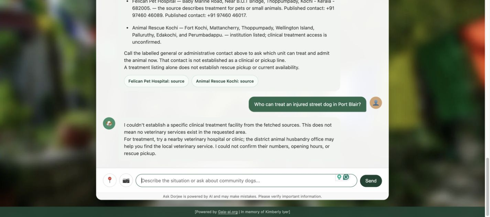
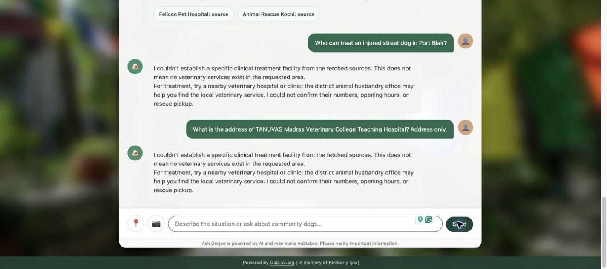
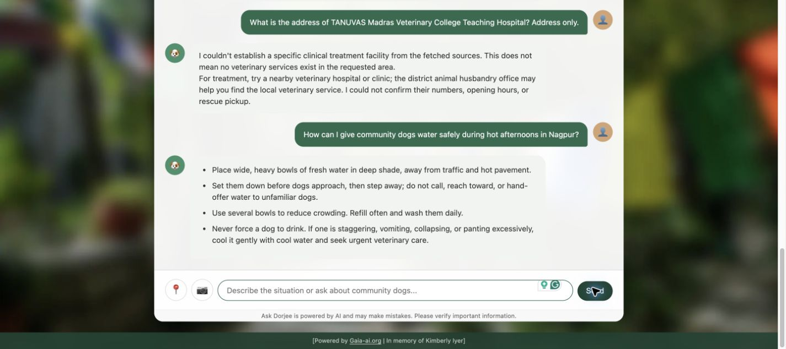
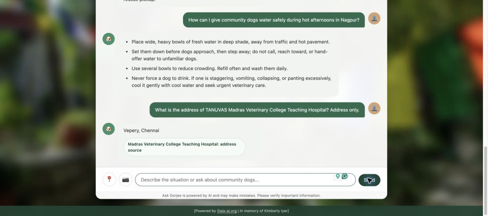
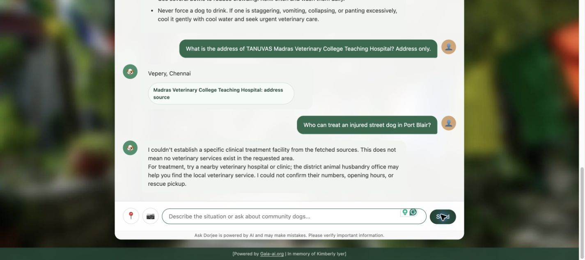
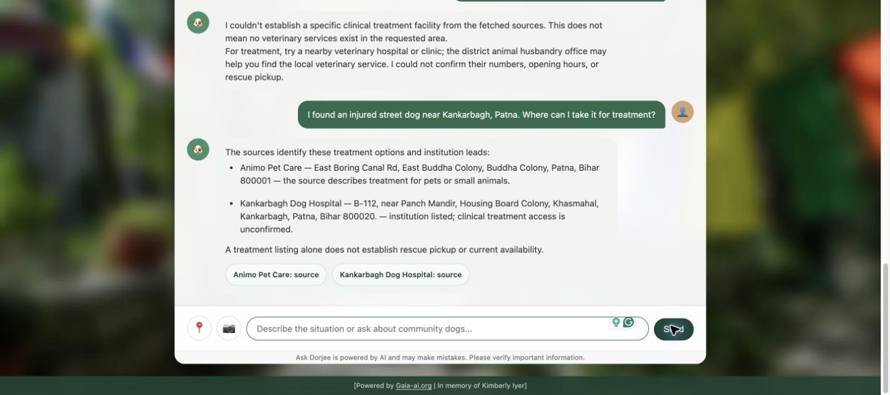

Repeated fallback: captured questions, answers and verdicts
All UI questions stayed in the same public browser conversation. 180 focused checks passed for the deployed address fix; 182 passed for the later candidate. That candidate was NOT activated because its EC2 Port Blair lookup still failed. The UI answers below are separately judged.
Findings and changes
The repeated text is inserted by the application's evidence-review fallback. It does not prove that every question failed at the model, or that local services do not exist.
Confirmed fixes live on EC2: source 440951f, prompts srini-v2.4-2026-10-25.
- Address requests were treated as clinical discovery when the router phrased their context as "Find the address...". Address-only lookups now use a separate evidence path and do not require treatment/admission proof.
- The institution parser could include "What is the address of" in the selected name, overriding a correct router selection. Address-of/for prefixes are now recognized.
- A literal fetched facility/address row could be ignored when the model proposed a longer address containing unsupported additions. The application can now return the selected facility's literal short address row without another model call. Another campus or administrative footer cannot supply the address.
- Failed source URLs are skipped within one research turn; a fresh request may retry them. Adaptive research receives the specific evidence gap and unreadable source URLs.
- Unrelated earlier cases are removed from research input when the requested case changes. The stored shared conversation is retained.
Live UI results in the same conversation:
- TANUVAS address-only: previously generic fallback; now "Vepery, Chennai" with the selected hospital's separate source card. It is a short published locality, without a claimed street number or PIN.
- Nagpur water advice: worked before this fix; specific practical advice rather than a provider fallback.
- Patna treatment: source-supported pet-treatment provider and address returned.
- Port Blair: still returned the generic fallback after v2.4. This is a FAIL, not a completed lookup.
Further candidates were tested but NOT activated on EC2:
- Source 9ad4610 / v2.5: interleaved publishers after leading citations so one inaccessible site cannot consume every source slot, and made the literal locality requirement explicit to the reviewer. Port Blair still failed.
- Source 6fb696c / v2.6: additionally highlighted fetched local Animal Husbandry/veterinary-office passages for a labelled administrative referral when clinical evidence is insufficient. Port Blair still failed. This candidate is available in GitHub and on localhost, but the public app remains on the tested v2.4 address fix.
Validation: 180 focused checks passed for deployed source 440951f; 182 passed for candidate 6fb696c. Candidate backend tests and public UI observations are recorded separately. Passing these checks does not establish successful live provider discovery. The original 25 questions were not all rerun.
Remaining work: trace the final retrieved pages and claim rejections for failing cities, then repair source acquisition and location/service binding with captured evidence. Prompt-only changes did not resolve Port Blair. Do not bypass institution/phone proof or invent dog admission, opening hours or rescue pickup to hide this failure.
Phone-to-institution binding, network protections and India-only provider scope remain. No provider was called. Existing incident, alert, knowledge and image data were preserved. Original prompt text is retained in archives and Git history.
Method and limits
- Small targeted follow-up, not a rerun of all original 25 questions.
- Verdicts are manual requirement checks; automated checks are reported separately.
- Public UI and candidate backend results are separate. Candidate success does not relabel a failed public retest.
- No provider was called. Published details do not confirm current dog admission, opening hours or rescue pickup.
- The browser shows a limited recent history; each answer was captured before another question was sent.
BEFORE_PORT_BLAIR — FAIL
Who can treat an injured street dog in Port Blair?
🐶
I couldn't establish a specific clinical treatment facility from the fetched sources. This does not mean no veterinary services exist in the requested area.
For treatment, try a nearby veterinary hospital or clinic; the district animal husbandry office may help you find the local veterinary service. I could not confirm their numbers, opening hours, or rescue pickup.
Judge: No identifiable local provider, address or contact was retained.
Source f86ead9 · srini-v2.3-2026-10-25
Captured UI

BEFORE_ADDRESS — FAIL
What is the address of TANUVAS Madras Veterinary College Teaching Hospital? Address only.
🐶
I couldn't establish a specific clinical treatment facility from the fetched sources. This does not mean no veterinary services exist in the requested area.
For treatment, try a nearby veterinary hospital or clinic; the district animal husbandry office may help you find the local veterinary service. I could not confirm their numbers, opening hours, or rescue pickup.
Judge: Ignored the named institution and address-only constraint; returned generic treatment advice.
Source f86ead9 · srini-v2.3-2026-10-25
Captured UI

BEFORE_CARE — PASS
How can I give community dogs water safely during hot afternoons in Nagpur?
🐶
Place wide, heavy bowls of fresh water in deep shade, away from traffic and hot pavement.
Set them down before dogs approach, then step away; do not call, reach toward, or hand-offer water to unfamiliar dogs.
Use several bowls to reduce crowding. Refill often and wash them daily.
Never force a dog to drink. If one is staggering, vomiting, collapsing, or panting excessively, cool it gently with cool water and seek urgent veterinary care.
Judge: Specific practical water advice; did not enter the provider fallback.
Source f86ead9 · srini-v2.3-2026-10-25
Captured UI

AFTER_ADDRESS — PASS
What is the address of TANUVAS Madras Veterinary College Teaching Hospital? Address only.
🐶
Vepery, Chennai
Madras Veterinary College Teaching Hospital: address source
Judge: Only the published facility locality, Vepery, Chennai, with a separate source card. This is a short published address; no street number or PIN is claimed.
Source 440951f · srini-v2.4-2026-10-25
Captured UI

AFTER_PORT_BLAIR — FAIL
Who can treat an injured street dog in Port Blair?
🐶
I couldn't establish a specific clinical treatment facility from the fetched sources. This does not mean no veterinary services exist in the requested area.
For treatment, try a nearby veterinary hospital or clinic; the district animal husbandry office may help you find the local veterinary service. I could not confirm their numbers, opening hours, or rescue pickup.
Judge: The v2.4 public retest still returned the generic fallback. Kept as a failure despite a partial candidate result.
Source 440951f · srini-v2.4-2026-10-25
Captured UI

AFTER_PATNA — PASS
I found an injured street dog near Kankarbagh, Patna. Where can I take it for treatment?
🐶
The sources identify these treatment options and institution leads:
Animo Pet Care — East Boring Canal Rd, East Buddha Colony, Buddha Colony, Patna, Bihar 800001 — the source describes treatment for pets or small animals.
Kankarbagh Dog Hospital — B-112, near Panch Mandir, Housing Board Colony, Khasmahal, Kankarbagh, Patna, Bihar 800020. — institution listed; clinical treatment access is unconfirmed.
A treatment listing alone does not establish rescue pickup or current availability.
Animo Pet Care: source
Kankarbagh Dog Hospital: source
Judge: Named pet-treatment provider with a source-supported address; secondary hospital uncertainty and pickup limitations retained.
Source 440951f · srini-v2.4-2026-10-25
Captured UI
